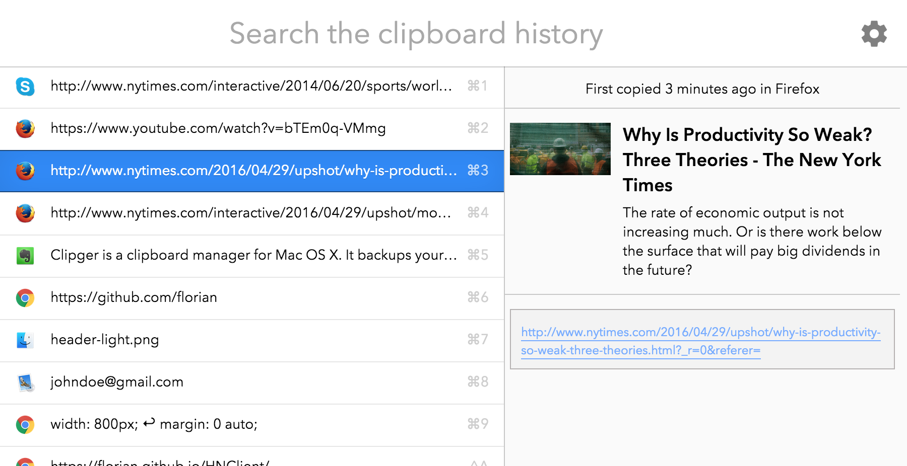
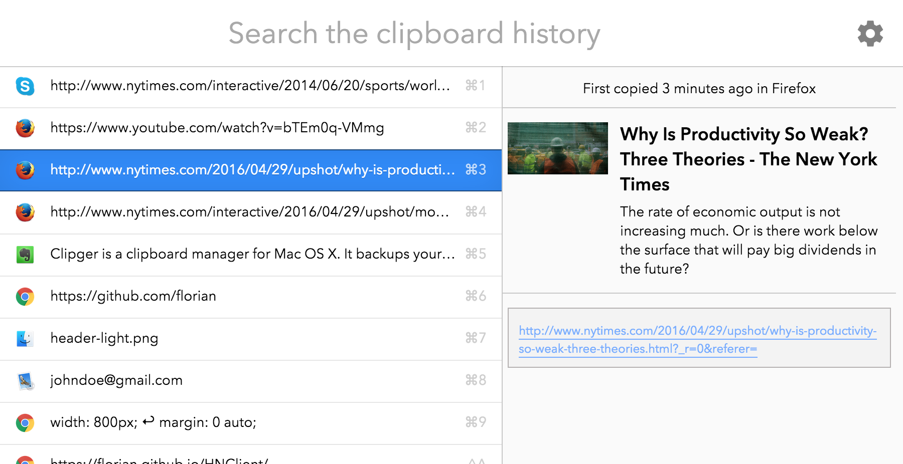

clipger
Clipger is a clipboard manager for Mac OS X. It backups your entire clipboard history and makes it easily searchable.
It features intelligent previews and has useful features like appending to the clipboard or pasting right into the current app.
 
